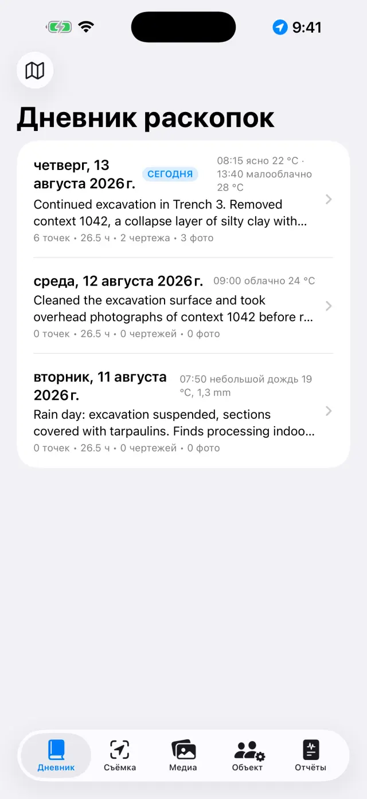
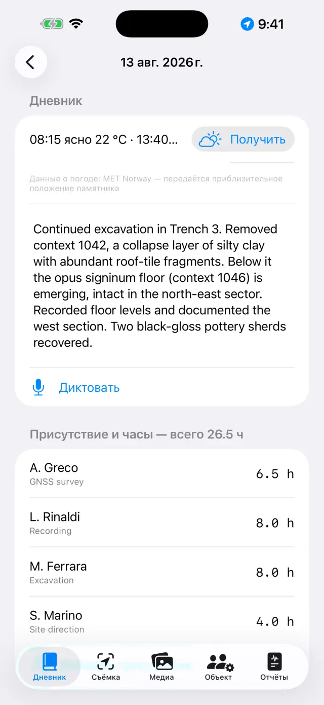
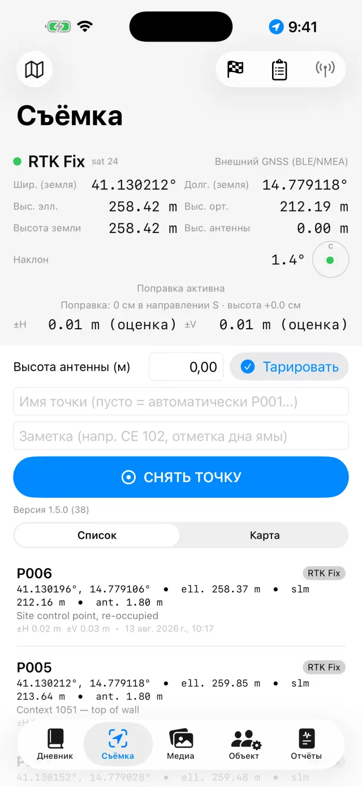
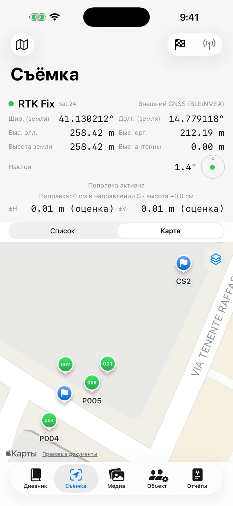
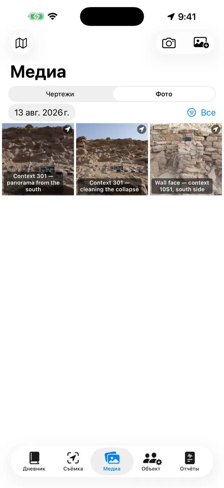
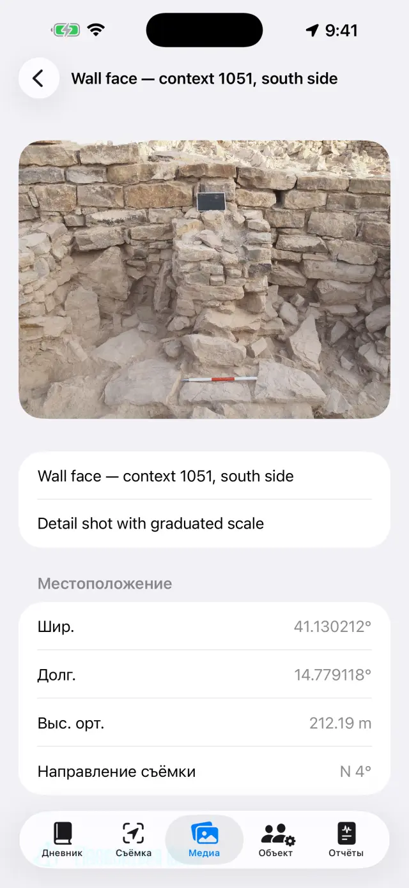
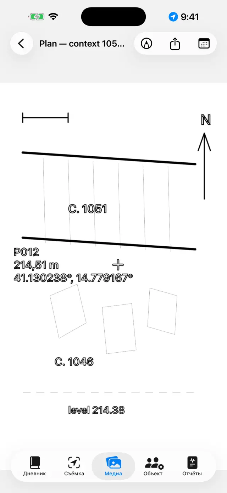
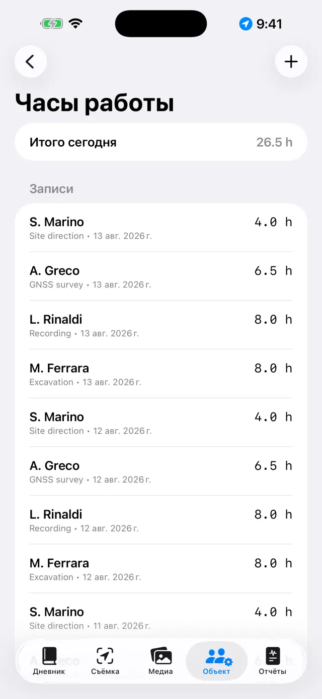
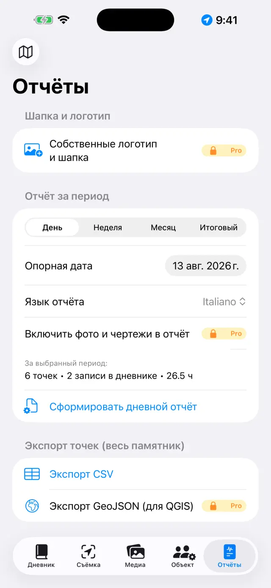

Цифровой дневник раскопок для iPhone и iPad. 100% офлайн: ваши данные остаются на устройстве.
В двух словах
Идея всего одна: каждый день раскопок — это страница, которая
заполняется сама. Вы фиксируете всё там, где это происходит, — точку GNSS в
разделе Съёмка, фото в Медиа, часы в Объекте, — а страница дня в разделе
Дневник автоматически собирает всё это. В конце недели или по
завершении раскопок отчёты формируются сами на основе страниц.
Типичный день
УтроОткройте страницу дня, отметьте погоду и запись в дневнике (можно и голосом — кнопкой Диктовать)
ПрисутствиеВ разделе Объект зафиксируйте, кто присутствует, и часы каждого
СъёмкаСнимите точки GNSS; при работе с RTK сначала проверьте репер
ФотоСнимайте из раздела Медиа: координаты прикрепляются сами
ЧертежиПерерисуйте разрез или план поверх фото (цифровая «калька»)
ВечерВ разделе Отчёты сформируйте дневной отчёт: PDF готов к отправке
Первые шаги
При первом запуске уже есть демонстрационный памятник. Чтобы создать свой,
нажмите на имя памятника вверху (значок 🗺) → Новый памятник…
и дайте ему имя (например, «Colle Sant'Angelo — Раскоп 3»).
Имя активного памятника всегда видно вверху: на всех вкладках отображаются
данные этого памятника. Чтобы сменить памятник, нажмите на имя ещё раз:
список находится под заголовком «Ваши памятники», а с помощью
Переименовать памятник… вы можете исправить имя, ничего не
потеряв.
Предоставьте разрешения, когда система их запросит: местоположение
(для точек), камера (для фото), микрофон (для надиктовки),
Bluetooth (только если используете внешний приёмник).
Пять вкладок
📓 Дневник
Нажмите на день, чтобы открыть его страницу: дневник, погода, присутствие,
точки, фото и чертежи этого дня уже там.
Напишите текст дневника или нажмите Диктовать и говорите:
распознавание происходит на устройстве и работает даже без сети.
Погоду можно вписать вручную (например, «Ясно, 28 °C, лёгкий ветер») или
получить нажатием Получить — приложение запрашивает текущие условия
у норвежской метеослужбы. Для этого нужна сеть, и это работает только для
сегодняшнего дня: погоду за вчера восстановить уже нельзя. Повторное нажатие
днём добавляет ещё одно измерение. То, что вы вписали вручную, всегда имеет
приоритет.
При запросе погоды наружу уходит только положение района, округлённое
примерно до 11 метров, а в отчётах строка появляется на языке отчёта.

Список дней

Страница дня
📍 Съёмка
Панель вверху показывает текущее положение в реальном времени: координаты,
высоты, точность и тип fix (GPS / RTK Float / RTK Fix).
Если используете веху, задайте Высота антенны (м): высота точки
автоматически приводится к земле.
Нажмите Снять точку. Имена присваиваются по порядку (P001,
P002…), но можно ввести своё (например, «СЕ 102 — дно ямы») и добавить
заметку.
Переключайтесь между Список и Карта, чтобы видеть
точки на местности; на карте можно включить кадастр или другую службу WMS.
Реперы (🏁) находятся в своём разделе: импортируйте их из CSV или создайте,
а затем используйте Проверка, чтобы в реальном времени следить за
отклонениями ΔС/ΔВ/ΔВыс. перед съёмкой.
Журнал нивелирования — это полевой журнал для оптического
нивелира: станции, отсчёты назад и вперёд, высоты, вычисленные от исходного
репера, с контролем невязки. Нивелированные точки попадают в памятник со
своей высотой, как и точки GNSS.

Панель GNSS раздела Съёмка

Точки и реперы на карте
Каждая точка сохраняет обе высоты:
эллипсоидическую и ортометрическую (над уровнем моря). При использовании
встроенного GPS телефона высота над уровнем моря может быть недоступна: для
этого нужен внешний приёмник (см. ниже).
📷 Медиа
Снимайте кнопкой камеры или импортируйте из галереи.
Фото получают порядковое имя (F001, F002…) и привязываются к последней
доступной позиции GNSS.
При съёмке приложение также фиксирует по компасу направление
съёмки: в деталях фото и в отчётах вы увидите «вид с SO — 214°», а
для кадров, снятых вертикально вниз (план, дно СЕ), — зенитная пометка с
направлением верхнего края. Если компас подвержен помехам, приложение
сообщает об этом.
Нажмите на фото, чтобы задать название и заметки (например, «СЕ 102 с
севера»).
Поделиться карточкойPRO формирует
фотодокументационную карточку: фото с данными съёмки под
ним (памятник, номер, дата и время, координаты, высота, направление),
спутниковый вид с меткой места и конусом обзора, масштабную линейку карты и
стрелку севера. Для карты нужна сеть: без неё карточка всё равно
формируется, с расширенной панелью данных.

Галерея фото

Детали фотографии: координаты, высота и направление съёмки
✏️ Чертежи (в разделе Медиа)
Создайте новую доску и выберите фото памятника в качестве фона: это ваша
цифровая «калька». Чертёж можно продолжать в течение нескольких дней.
Обведите слои, разрезы и камни пальцем или Apple Pencil; отрегулируйте
прозрачность фото, чтобы лучше видеть линии. Сведите или разведите
пальцы, чтобы масштабировать (до 6×, двойное касание двумя пальцами
возвращает к 1×).
Автоматическая обводкаPRO
распознаёт контур объекта, которого вы касаетесь (камень, граница слоя), и
превращает его в линию: цвет и толщину можно менять, не выходя из режима.
Всё происходит на устройстве, без сети.
Добавьте текстовые поля для подписей (например, «СЕ 1002»): их можно
перемещать, изменять размер сведением пальцев, и доступны четыре варианта
шрифта.
Инструментом Масштаб (линейка) коснитесь двух концов
известного отрезка — участка рейки — и впишите реальное расстояние: фото
получает масштаб, и с этого момента экспорт указывает размеры в метрах.
Инструментом Высотная точка поставьте на фото крестик точки
GNSS памятника (или точки, введённой вручную): имя, высота и координаты
появляются в перетаскиваемой подписи с выносной линией.
Экспорт с легендойPRO: изображение
выходит с белой полосой снизу — метрической шкалой (если есть масштаб),
стрелкой севера для фото, снятых вертикально вниз, «вид с …» для фронтальных.
Векторный экспортPRO: SVG для
чертежа или DXF для ГИС. При наличии как минимум двух
высотных точек с координатами на фото, снятом вертикально вниз, DXF выходит
с геопривязкой в UTM и в QGIS сам встаёт на своё место на
карте мира; при наличии только масштаба — выходит в локальных метрах; без
того и другого приложение сообщает об этом и не создаёт файл без единиц
измерения.
Когда закончите, скройте фото: останется чистый чертёж, готовый для
отчёта.

Цифровая калька
👷 Объект
Записывайте присутствие за день: имя, должность и часы каждого.
Ведите учёт оборудования и того, за кем оно закреплено.

Присутствие и часы
📄 Отчёты
Выберите тип: дневной (бесплатно, с водяным знаком),
недельный, месячный или итоговый
с полными приложениями PRO.
Выберите язык отчёта из семнадцати, независимо от языка
приложения: отчёт может выйти на английском, даже если вы работаете в
приложении на русском.
Сформируйте PDF или экспортируйте DOCX с логотипом и фото
PRO, CSV точек, GeoJSON для QGIS
PRO.
При включённых фото в отчётах можно выбрать Фотокарточки вместо
фотоPRO: каждое фото попадает в PDF и DOCX
как карточка документации с полными данными и картой, на языке отчёта.

Формирование отчётов
Внешний приёмник GNSS и NTRIP
С внешним приёмником (антенна сантиметровой точности) приложение достигает
точности RTK. Встроенный GPS всегда остаётся доступен как запасной вариант.
Включите приёмник и активируйте Bluetooth на телефоне.
В разделе Съёмка выберите источник позиции: Внешний GNSS
(BLE/NMEA)PRO и выберите свой приёмник из
списка. Поддерживаются также приёмники MFi (бесплатно) и приёмники,
передающие NMEA по сети.
Для RTK-коррекций настройте NTRIP: адрес кастера, порт,
mountpoint, имя пользователя и пароль (хранятся в связке ключей устройства).
Приложение отправляет вашу позицию кастеру и получает поправки.
Дождитесь перехода в RTK Fix: сантиметровая точность.
Перед началом работы проверьте на репере.
Резервное копирование и обмен
В меню памятника нажмите Экспорт памятника (.zip): внутри
всё — дневник, точки, фото, чертежи, часы, реперы.
Храните ZIP-файл где угодно (Файлы, Диск, почта…). Это ваша резервная
копия: у приложения нет облака — сознательно.
Импорт памятника (.zip)… воссоздаёт памятник на другом
устройстве, даже между iPhone и Android.
⚠️ Удалить памятник… удаляет памятник со всем его
содержимым и является необратимым действием: если сомневаетесь,
сначала экспортируйте ZIP.
Бесплатно и Pro
Бесплатно
Pro
Памятники
1
Неограниченно
GNSS
Встроенный GPS, приёмники MFi
+ BLE/NMEA, NTRIP
Отчёты
Дневной, с водяным знаком
Все, без водяного знака
Экспорт
PDF, CSV
+ DOCX с логотипом и фото, GeoJSON
Чертежи
Калька, масштабирование, тексты, масштаб, высотные точки
+ Автоматическая обводка, экспорт с легендой, SVG/DXF
Журнал нивелирования
✓
✓
Фотокарточка
—
Общий доступ и карточки в отчётах
Голосовой ввод
✓
✓
Языки отчётов
17
17
Pro — это подписка на месяц или на год с автопродлением, либо разовый
пожизненный платёж. Управлять подпиской и отменить её можно в любой момент в
настройках Apple ID.
Решение проблем
Bluetooth-приёмник не появляется или не подключается
Проверьте по порядку:
приёмник включён и ещё не подключён к другому приложению или телефону;
системный Bluetooth включён, и у приложения есть разрешение на Bluetooth
(Настройки → Giornale di Scavo);
в разделе Съёмка выбран источник Внешний GNSS (BLE/NMEA);
выключите и включите приёмник, затем повторите поиск.
Никак не удаётся получить RTK Fix
Нужно активное соединение NTRIP: проверьте кастер, mountpoint и учётные
данные.
Проверьте покрытие мобильной сети телефона: поправки передаются через
интернет.
Важно открытое небо: густые деревья и близкие стены ухудшают сигнал. При
слабых условиях можно остаться в режиме RTK Float (дециметровая точность).
Выберите ближний mountpoint (< 30–40 км) или сеть VRS.
NTRIP не подключается
Проверьте адрес и порт (часто 2101) и существование mountpoint:
большинство кастеров публикуют список (sourcetable).
Неверные имя пользователя или пароль дают ошибку 401/403: перепроверьте
учётные данные.
Некоторые сети требуют отправки позиции (GGA): приложение делает это само,
но приёмнику нужен предварительный fix.
Высота над уровнем моря пустая или равна нулю
Встроенный GPS телефонов даёт только эллипсоидическую высоту. Ортометрическая
высота (над уровнем моря) поступает из фразы GGA внешнего приёмника. Без
приёмника точки всё равно сохраняют эллипсоидическую высоту.
Надиктовка не работает
Проверьте разрешения на микрофон и распознавание речи в Настройках.
Распознавание происходит на устройстве: в первый раз системе может
понадобиться скачать языковую модель (нужна сеть один раз, затем работает
офлайн).
Говорите короткими фразами; текст добавляется в конец дневника.
Кадастровая карта (WMS) не отображается
Приложение работает офлайн, но слои WMS — это веб-службы: нужны подключение
и работающая служба. Итальянский кадастр настроен заранее; для других стран
введите конечную точку WMS национальной службы (она должна поддерживать
EPSG:3857). Вне зоны покрытия базовая карта и точки остаются видимыми.
У фото нет координат
Фото получает позицию от последнего fix GNSS: сначала откройте раздел Съёмка
и дождитесь привязки позиции, затем снимайте. При отклонённом разрешении на
местоположение фото сохраняются без координат.
В отчёте нет фото или логотипа
Фото в отчётах, логотип и настраиваемая шапка входят в Pro и относятся и к
DOCX, и к PDF. В бесплатном дневном отчёте есть водяной знак, а фото не
включены.
Я случайно удалил памятник
Удаление окончательное: данные восстановить нельзя (облака нет). Если у вас
есть ранее экспортированный ZIP, импортируйте его, чтобы восстановить памятник
на ту дату. Совет: экспортируйте ZIP в конце каждого дня.
Я купил Pro, но всё ещё заблокировано
Нажмите Восстановить покупки на экране Pro, используя тот же
Apple ID, что и при покупке. Если вы сменили устройство, восстановление
вернёт подписку или пожизненную лицензию.
«Получить» неактивна, или написано «Погода недоступна»
если кнопка неактивна, вы находитесь на странице прошедшего дня: погоду
можно получить только за сегодняшний день;
если появляется «Погода недоступна», значит нет сети, либо у памятника ещё
нет точки GNSS, от которой можно взять позицию, — снимите точку и попробуйте
снова.
Фотокарточка выходит без карты
Спутниковый вид поступает от Apple и требует сети: приложение ждёт до 15
секунд, затем формирует карточку без карты (данные не ждут сеть). На
медленных сетях на объекте может уйти всё время ожидания: повторите попытку
через Wi-Fi. Без геотега на фото карты не будет по определению.
DXF отклоняется или открывается «рядом с началом координат» в ГИС
для геопривязанного DXF нужны фото, снятое вертикально
вниз камерой приложения, и как минимум две высотные точки с
координатами, достаточно удалённые друг от друга на фото;
с одним лишь масштабом по рейке DXF выходит в локальных
метрах: это корректно, но ГИС покажет его рядом с началом координат
— приложение предупреждает об этом заранее;
без масштаба и без точек экспорт отклоняется: DXF без единиц измерения
не может быть осмысленно прочитан ни одной ГИС.
Стрелка севера не появляется при экспорте с легендой
Стрелка появляется только для фото, снятых вертикально вниз
камерой приложения, которая фиксирует азимут в момент съёмки. Для
фронтальных фото появляется надпись «вид с …» (стрелка севера на плоскости
фасада была бы геометрической ложью); для фото, импортированных из галереи,
не появляется ни то, ни другое — потому что отсутствуют данные съёмки.